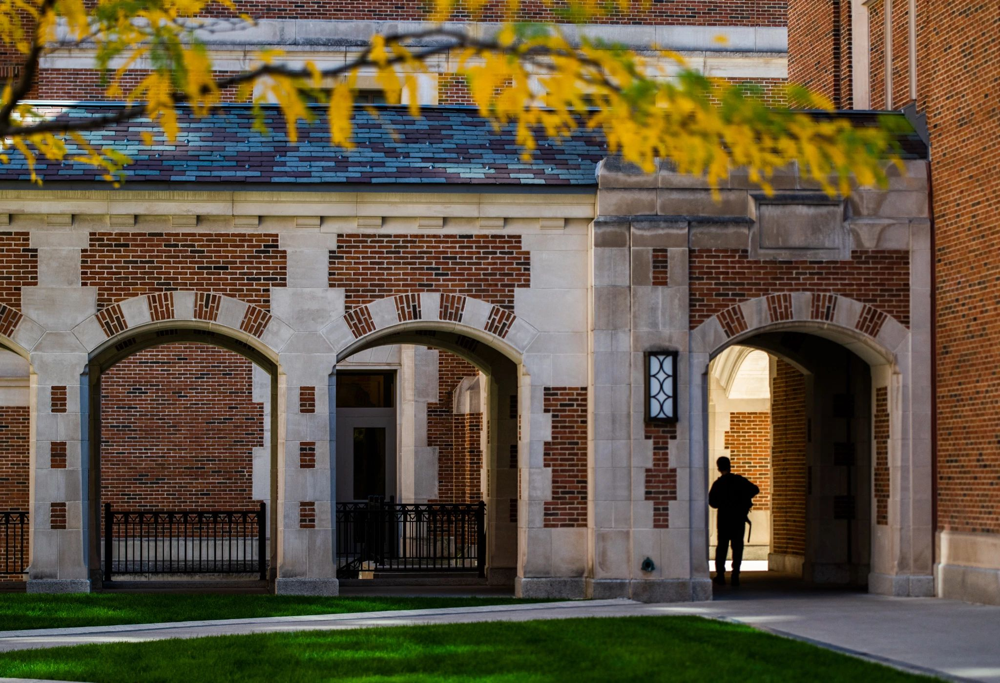

CEW+ Main Mission
At CEW+, we navigate circumstantial barriers by providing academic, financial, and professional support to help you reach your personal potential. Established to support women through higher education, we lift up women and all underserved communities at U-M and beyond. Through career and education counseling, funding, workshops, events, and a diverse, welcoming community, we exist to empower. We are CEW+, and we're here to help you reach your potential.

Brief History
Established in 1964, the Center for the Education of Women+ was a pioneering university women’s center. Designed to serve the needs of women students as well as women returning to school or work, CEW+ (then known as the Center for the Continuing Education of Women) was founded with a three-part mission of service, advocacy, and research. The Center for the Education of Women+ (now known as CEW+) continues its work today, serving University students, staff and faculty, community members, and all genders, facing education, employment, or other life issues.

Fall campus